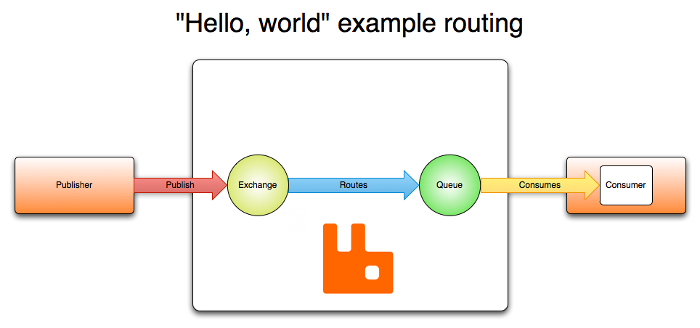

JMS vs AMQP
关于 JMS 和 AMQP 在消息和代理上的一些说明。
如今，AMQP 越来越受欢迎。因此，我认为这是一个很好的机会，以了解它如何与旧的 JMS 匹配。
JMS
包括 Java RMI 在内的远程过程调用（RPC）系统基本都是是同步的 – 调用者必须阻塞并等待，直到被调用的方法完成执行，因此，如果不使用多个线程，则无法开发松耦合的企业应用程序。换句话说，RPC 系统要求客户端和服务器同时可用。然而，在某些应用中，这种紧密耦合可能是不可能的或奢望的。面向消息的中间件 - Message Oriented Middleware（MOM）系统为此类问题提供了解决方案。它们基于异步交互模型，并提供可通过网络访问的消息队列的抽象。
由 Sun Microsystems 和其他几家公司在 Java Community Process 下以 JSR 914 设计的 Java Message Service（JMS）是第一个获得业界广泛支持的企业消息 API。Java 消息服务（JMS）旨在简化开发异步发送和接收业务数据和事件的业务应用程序的过程。它定义了一个通用的企业消息传递 API，该 API 旨在为各种企业在消息产品上提供轻松高效地支持。 JMS 支持两种消息传递模型：点对点（队列） 和 发布-订阅（主题）。
JMS 定义了一组接口和语义，这些接口和语义允许 Java 应用程序与其他消息传递实现进行通信。JMS 实现被称为 JMS 提供程序 - provider。 JMS 通过最小化 Java 开发人员使用企业消息产品必须学习的概念集来简化学习过程，同时，它使消息传递应用程序的可移植性最大化。
下图描述了生产和消费消息的高层视图。

总结
JMS 是用于与面向消息的中间件通信的标准 Java API。
JMS 是 Java J2EE 的一部分，由 JSR 914 定义。它被认为是健壮和成熟的。
JMS 允许两个不同的 Java 应用程序进行通信，这些应用程序可能正在使用 JMS 客户端，即能够进行通信，也保证解耦。
如果您正在寻找 JMS 消息代理，则您的代码中可能需要 ActiveMQ 或 HornetQ 客户端。ActiveMQ 更受欢迎。
因此，JMS 允许 Java 组件仅用几行代码就可以可靠地发送和接收消息，实现低耦合。
可以用最少的代码，甚至根本不更改代码，就可以用一个 JMS 代理替换另一个。
AMQP
AMQP（代表“高级消息队列协议 - Advanced Message Queuing Protocol”）是一种开放标准的应用程序层协议。它支持符合要求的客户端应用（application）和消息中间件代理（messaging middleware broker）之间进行通信。
AMQP 的工作过程如下图：消息（message）被发布者（publisher）发送给交换机（exchange），交换机常常被比喻成邮局或者邮箱。然后交换机将收到的消息根据路由规则分发给绑定的队列（queue）。最后 AMQP 代理会将消息投递给订阅了此队列的消费者（consumer），或者消费者按照需求自行获取。

发布者（publisher）发布消息时可以给消息指定各种消息属性（message meta-data）。有些属性有可能会被消息代理（brokers）使用，然而其他的属性则是完全不透明的，它们只能被接收消息的应用所使用。
从安全角度考虑，网络是不可靠的，接收消息的应用也有可能在处理消息的时候失败。基于此原因，AMQP 模块包含了一个消息确认（message acknowledgements）的概念：当一个消息从队列中投递给消费者后（consumer），消费者会通知一下消息代理（broker），这个可以是自动的也可以由处理消息的应用的开发者执行。当“消息确认”被启用的时候，消息代理不会完全将消息从队列中删除，直到它收到来自消费者的确认回执（acknowledgement）。
在某些情况下，例如当一个消息无法被成功路由时，消息或许会被返回给发布者并被丢弃。或者，如果消息代理执行了延期操作，消息会被放入一个所谓的死信队列（Dead letter queue）中。此时，消息发布者可以选择某些参数来处理这些特殊情况。
队列，交换机和绑定统称为 AMQP实体（AMQP entities）。
交换机和交换机类型
交换机拿到一个消息之后将它路由给一个或零个队列。它使用哪种路由算法是由交换机类型和被称作绑定（bindings）的规则所决定的。AMQP 0-9-1的代理提供了四种交换机
| 交换机类型 | 介绍 |
|---|---|
| Direct exchange（直连交换机） | 根据消息携带的路由键路由消息。路由键（routing key）是一串单词，由句点分隔，与消息有一定的相关性。 |
| Fanout exchange（扇型交换机） | 将消息路由到所有可用队列。在这种广播类型的交换中，路由键被忽略。 |
| Topic exchange（主题交换机） | 根据与路由键的完全或部分匹配将消息路由到一个或多个队列。 |
| Headers exchange（头交换机） | 根据消息头路由消息，消息头可以包含比路由键更多的属性。 |
除交换机类型外，在声明交换机时还可以附带许多其他的属性，其中最重要的几个分别是：
- Name
- Durability （消息代理重启后，交换机是否还存在）
- Auto-delete （当所有与之绑定的消息队列都完成了对此交换机的使用后，删掉它）
- Arguments（依赖代理本身）
交换机可以有两个状态：持久（durable）、暂存（transient）。持久化的交换机会在消息代理（broker）重启后依旧存在，而暂存的交换机则不会（它们需要在代理再次上线后重新被声明）。然而并不是所有的应用场景都需要持久化的交换机。
总结
AMQP 提供统一消息服务的应用层高级消息队列规范，基于此规范的客户端与消息中间件可传递消息，并不受客户端不同产品和不同开发语言等条件的限制。
如果你想使用 AMQP，则可以选择 RabbitMQ，Qpid 或 StormMQ。
AMQP 提供了有关如何构造消息的描述。它没有提供有关如何发送消息的 API。
总结
好吧…… JMS 是一个 API，AMQP 是一个协议。
早在定义 JMS 时，JMS 实际上就没有在 JMS 客户端和 JMS 消息传递服务器之间强制使用协议。
实现 JMS API 的 JMS 客户端可以使用任何协议与 JMS 服务器进行通信。但是，JMS 客户端需要确保与 JMS API 兼容。而已。
另一方面，AMQP 只是消息客户端和消息中间件之间的协议。因此，JMS 客户端可以使用 AMQP 作为协议与消息传递服务器进行通信。
实际上，它已经存在，例如，ActiveMQ 正在提供对 AMQP 1.0 的支持。
简而言之，AMQP 定义了消息的通讯协议，JMS 定义了 Java 程序间消息通讯接口。
参考资料
- Getting Started with Java Message Service JMS 入门
- JMS vs AMQP
- AMQP Model Explained AMQP 模型解释